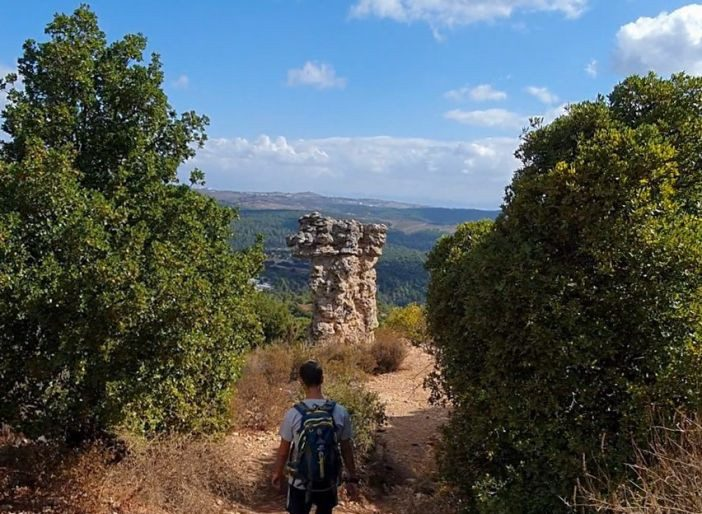

15 באפריל 2026
מדריך לוגיסטיקה לשביל ישראל למתחילים
כל מה שצריך לדעת כדי לצאת לשביל ישראל עם ליווי לוגיסטי מסודר - מתכנון המסלול ועד לנקודות איסוף ציוד לאורך הדרך.
קרא עוד ←כל מה שצריך לדעת לפני שיוצאים למסע: מדריכי ליווי לוגיסטי לשביל ישראל, רשימות ציוד מלאות, טיפים לתכנון אספקה, המלצות לעצירות לאורך הדרך ועצות מהשטח למטיילים, משפחות וקבוצות.
כל מה שצריך לדעת כדי לצאת לשביל ישראל עם ליווי לוגיסטי מסודר - מתכנון המסלול ועד לנקודות איסוף ציוד לאורך הדרך.
קרא עוד ←
מדריך מעשי לתכנון אספקת מים, אוכל וציוד לטיולים ארוכים במדבר - איך מחשבים כמויות ואיפה ממקמים נקודות איסוף.
קרא עוד ←רשימת ציוד מקיפה לשביל ישראל: מה לוקחים בתרמיל, מה משאירים ברכב הליווי ואיך בוחרים פריטים שיחזיקו לאורך כל המסלול.
קרא עוד ←
מה זה ליווי לוגיסטי בשטח, מה הוא כולל ולמה הוא הופך טיול רגלי ארוך לחוויה הרבה יותר קלה ונעימה.
קרא עוד ←
ההבדלים בין טיול קיצי לחורפי בשביל ישראל: ציוד, כמויות מים, ביגוד והחלטות לוגיסטיות שמשתנות מעונה לעונה.
קרא עוד ←
המקומות הכי שווים לעצור בהם לאורך שביל ישראל - אתרי לינה, מעיינות, נקודות תצפית ומקומות לאיסוף אספקה.
קרא עוד ←
עשר טעויות שאנחנו רואים חוזרות על עצמן אצל מטיילים בשטח - וההחלטות הפשוטות שימנעו מכם את הצרות האלה.
קרא עוד ←
איך מתכננים מסע קבוצתי עם ליווי לוגיסטי מלא: ארוחות, לינה, הובלת ציוד והתאמות לגדלים ולסגנונות קבוצה שונים.
קרא עוד ←
מדריך לתכנון טיול משפחתי בשביל ישראל עם תמיכה לוגיסטית - איך מתאימים את המסלול לילדים ומה כדאי להשאיר לצוות הליווי.
קרא עוד ←המדריך המלא לטיולים משפחתיים בישראל עם אירוח וציוד לכל הגילאים - איפה כדאי לטייל, מה לוקחים ואיך מתכננים חוויה שכולם יזכרו.
קרא עוד ←